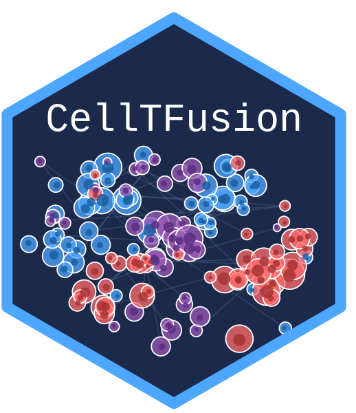

Compute latent factors from cell group scores using NMF
compute.latent_factors.RdDecomposes signed CCA composite scores into non-negative latent factors by splitting each score into its positive and negative direction components, then applying Non-negative Matrix Factorization via RcppML (fast C++ backend).
Arguments
- X
Numeric matrix of size samples x cell groups (signed CCA composite scores).
- rank
Integer; number of NMF factors. If NULL, estimated automatically at the elbow of the reconstruction MSE across ranks 2:8 (the rank with the largest second difference of the MSE curve). Ranks are limited to the number of cell groups (no more factors than cell groups); with fewer than 4 cell groups there are too few candidate ranks for an elbow, and rank = 2 is used (rank = 1 with a single cell group).
- seed
Random seed used for the NMF fits. Default 123. The caller's random number generator state is restored when the function returns.
- file_name
Optional character suffix for the saved patient-mixture plot.
- return
Logical. If TRUE (default), saves the patient-mixture barplot to
Results/NMF_patient_mixture_<file_name>.pdf(Results/NMF_patient_mixture.pdfiffile_nameisNULL).
Value
A named list with:
- Z
Sample-level NMF factor scores (samples x rank). Non-negative. Each factor (column) sums to 1 over the samples: the size of each factor is in
nmf_model$d(the NMF isW %*% diag(d) %*% t(Z)). Tests on one factor at a time do not depend on this scale; to compare factors within a sample, multiply each column by itsd, as done forpatient_mixture.- W
Feature weights per factor ((2 x n_CGs) x rank). Non-negative.
- nmf_input
The positive-negative split matrix fed to NMF (samples x (2 x n_CGs)).
- nmf_model
The
RcppML::nmf()model object (includes the scaling vectord).- patient_mixture
Long-format data frame of per-sample factor proportions used for the mixture plot: the factor scores multiplied by the size of each factor (
nmf_model$d), divided by their sum in each sample.
Details
Signed CCA scores are decomposed as:
score_pos = max(score, 0): how far the sample is on the active side of the TF module of that cell group (aligned with the TF program)score_neg = max(-score, 0): how far the sample is on the inactive side (anti-aligned)
Both are concatenated column-wise before NMF. Column names are suffixed with "_pos" and "_neg" to track direction. The scores must not contain missing values.
Examples
data("network.tuto")
data("deconv_subgroups.tuto")
cell_groups <- construct_cell_groups(network.tuto, deconv_subgroups.tuto)
#> 20 of 764 features were not assigned to any cluster by the tree cut and are not part of any cell group (blue: 6, pink: 2, red: 2, yellow: 8, black: 2)
latent <- compute.latent_factors(cell_groups$Cell_groups, return = FALSE)
#> Estimating optimal rank via elbow on reconstruction MSE (ranks 2:8)...
#> MSE by rank: k2=0.00127 k3=0.000964 k4=0.000838 k5=0.000756 k6=0.00071 k7=0.000675 k8=0.000632
#> Selected rank (elbow): 3
#> Running RcppML NMF with rank = 3...
head(latent$Z)
#> Factor1 Factor2 Factor3
#> SAM7f0d9cc7f001 0.000000000 0.007002944 0.009283874
#> SAM4305ab968b90 0.019634032 0.000000000 0.000000000
#> SAMcf018fee2acd 0.003737999 0.002203283 0.005899748
#> SAMcc4675f394a1 0.007148875 0.007615527 0.000000000
#> SAM49f9b2e57aa5 0.008341286 0.000000000 0.002867088
#> SAM2e7aa8fa0ab3 0.003237255 0.003662716 0.000000000
latent$nmf_model$d # size of each factor
#> [1] 615.4030 594.7220 311.0203